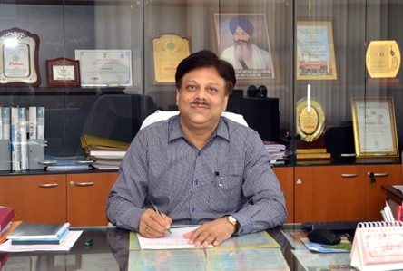

DIRECTOR SLIET PROF. SHAILENDRA JAIN: SLIET MODEL & ITs CAPABILITY TO GO HIGHER

Prof. Shailendra Jain joined as Director, SLIET and has been serving the Institute since 3rd Nov., 2017. He is on deputation from Maulana Azad NIT, Bhopal where he is a Professor in Electrical Engineering.
Here are some excerpts from ANSHUMAT interview with Prof. Shailendra Jain, Director , SLIET in dialogue with Dr. Sanjeev Kumar Garg , Editor-in-Chief of the newsletter:
ANSHUMAT Q. 1: Please share your experience with SLIET as Director for the last five years.
Director: SLIET is an Institute with ample potential and much of it still untapped. It is a CFTI at par with NITs and IIITs with a unique mandate of catering to demand of technical manpower at various levels, with its innovative multi-entry, multi-exit modular pattern of education since 1991, in line with the national education policy NEP 2020. With its sprawling campus, natural beauty and ambience, deemed-to-university status, competent faculty and staff , SLIET is poised to take giant leaps in the technical education. Joined with a zeal to serve the institution as academic administrator, I feel privileged being at the helm of this Institute for the last five years.
ANSHUMAT Q. 2: What are the core strengths of SLIET as a technical Institution?
Director: The core strengths of SLIET are:
- A unique mandate to fetch students from Class 10th, in the main stream of technical education, through skill development,
- A unique course structure with more emphasis on practical/training,
- Fully funded by central government with deemed-to-be-university status,
- Well integrated with national-level institutes by offering entry in 4-year degree programmes (since 2014),
- Affordable fee structure suitable for all strata of society,
- The educational programmes of SLIET are innovative, practical and contain all aspects of National Education Policy 2020,
- Ideal education environment, with excellent unmatchable infrastructure, lush green campus with natural beauty,
- Fully residential campus, well qualified faculty and staff.
I strongly believe that SLIET has the capability to achieve newer heights in future.
ANSHUMAT Q.3: Anything you feel SLIET could have been done better?
Director: Every leading institution has its own evolution periodwith ups & down. I feel till date journey of SLIET is its evolution period. Today, SLIET has reached to a position to start delivering as expected. SLIET could do better in skill development with its unique concept, which is currently in re-structuring phase. Developing an eco-system of need-based research and consultancy, owing to its excellent expert faculty, could be another. All this will help in projecting itself at national map, better NIRF ranking, and NAAC/NBA accreditation.
ANSHUMAT Q.4: What do you think are some of the challenges being faced by SLIET while trying to be in the league of top Engineering Institutions in the country?
Director:Effective leadership, stable governance, rural location, availability of education in urban areas, social stigma to earn graduation degree rather than skill, lack of ownership etc. were a few challenges SLIET has faced. In spite of 33 years old CFTI, lack of status “Institute of National Importance (INI)”, like NITs/IIITs posed challenges on its branding.
ANSHUMAT Q.5: SLIET has been performing low in various rankings including NIRF for some years now. What plans the Institute has, to regain its glory?
Director:Honest efforts to achieve objectives and parameters of ranking/accreditation are more important, which automatically result in good ranking. Focused efforts towards a few important points shall help to regain its glory-
- Strengthening its unique mandate through re-structuring of ICD programs with more emphasis on practical/skill,
- Development of an eco-system for focused research such as “Technology for Agriculture”, adopted recently as one of the focus area,
- Focused emphasis on innovation, incubation and entrepreneurship activities,
- To become multi-disciplinary institute under Category-II (i.e. Teaching Intensive University).
ANSHUMAT Q.6: What are the major challenges for SLIET in the next five years?
Director:Major challenges in today’s scenario are-
- Implementation of multi-entry, multi-exit modular pattern in true spirit (i.e. with acceptability of exit option in practice),
- Improving admission statistics keeping in view the alternatives available with aspirants amid rising number of technical institute in urban areas,
- Improving skill and hence employability of its core courses i.e. ICD programs,
- To expand its wings, to explore possibilities of National Education Policy NEP-2020,
- To make it residential in true spirit for utilizing full potential of all.
ANSHUMAT Q.7: What are your suggestions, to integrate quality at all levels of education/Research in SLIET?
Director:I believe, following points may help to integrate quality at all levels-
- Departments shall develop course specific Centre of Excellence/Skill Based Training Centre,
- Liaison with industries for teaching specific courses, On the Job Training (OJT) and subsequent placement,
- Fix achievable targets and put honest efforts to achieve them,
- Promotion of research and consultancy activities,
- Strengthen Alumni interaction for student mentoring and placement,
- Strengthening student counselling/mentoring system,
- Proactive involvement of all for the cause of their being in the institute.
ANSHUMAT Q.8: Institute added a few feathers in its cap such as NBA Accreditation of all UG Programs, Awards by reputed agencies such as IE (I) and NITTTR Chandigarh. Would you please share some of the initiatives taken by you that gave good impetus in this direction?
Director:A good work culture, team work, motivated employees are the key parameters for the success of any institute/organisation. I have tried to create the same in the institute. I believe, you can throw light on some of the initiatives taken.
Anshumat:Yes, sir. A few noticeable initiatives taken in the recent past, ensured all-round growth of the institute:
- Start of 'ANSHUMAT' Quarterly Newsletter of SLIET to upkeep record of activities conducted,
- Introduction of Tutor Guardian and Student Mentor Scheme (TG/SMS) for strengthening student counselling system (multi-layer) for effective connect,
- Introduction of EAA (Extra Academic Activity) for the holistic development of students,
- Awards for the Meritorious students to promote competitiveness,
- Holistic development of students through enhanced Student’s Club Activities,
- Incentives for participation in Sports and Other Technical Activities,
- Conduction of theme based Technical and Cultural and Social Festivals,
- Start Celebration of Foundation Day of the Institute, to showcase our achievements and promotion of belongingness,
- NBA accreditation of all 7 UG programs,
- Installation of 1 MW Roof Top Solar Power Plant to Promote GREEN Energy,
- Conduction of litigation free/transparent recruitment/promotion of teaching/non-teaching staff,
- Establishment of IPR cell to promote patents and copyrights,
- Increase outreach, inclusivity and collaborations through MoUs,
- Strengthening of Internal Audit Cell to streamline the system
- Observation of “No Motor Vehicle Day” and “Natural Light Day” for value addition and support “Fit India Movement” and “Save Environment”,
- Bagged TEQIP-III resulted in following:
- Mentoring of NIT Uttarakhand under twinning arrangement,
- Development of Central Computing Facility with 108 computes,
- Development of multi-disciplinary research centres,
- Development Centre for Automation for training/research,
- Conceptualisation of War Room to set targets and its execution strategies,
- Student Solar Ambassador Workshop-2019 a first in the institute,
- Financial support to Theme Based Students Projects, to promote experiential learning,
- Initiation of SLIET Quality Publication Award (SQPA) and SLIET Research Project Awards (SRPA) to promote research environment,
- Various initiatives to make Institute safe and secure place for students/ faculty/ residents during COVID-19,
- Separation of Technical and Cultural Festivals, to bring quality participation in both,
- Addition of Smart Classrooms in every academic block,
- Renovation of Hostel for quality student life,
- Development of Seating Arena and Renovation of Library Reading Room to attract students towards Library,
- Excellence awards for faculty/staff instituted in different categories,
- To invite Hon'ble Governor as Chief Guest of Annual Convocation, 1st time in 2019, in the history of SLIET and 2nd time in 2022,
- Introduction of ERP for automation of academic activities,
- Introduction of Computer Based Test (CBT) for admission,
- Engagement of part time sports coaches to promote sports and fitness.
The outcome is witnessed as:
- SLIET adorned with Outstanding Institution Award (Engineering College Category) for the year 2021, in the Northern Region,
- SLIET has been awarded ‘Certificate of Appreciation’ for prestigious IE(I)-Engineering Education Excellence Award – 2022.
ANSHUMAT Q.9: All the technical Institutes in the country are in the competition with each other for getting the best ranks ranking either on a global or the national level. Do you think that it is promoting or hampering the quality of technical education in India?
Director:In my opinion it provides an opportunity to introspect, emphasize and improve its core strengths to be an ideal educational institute, as per its mandate.Honest efforts to achieve objectives and parameters of ranking/accreditation, will automatically ensure your identity and existence.
ANSHUMAT Q.10: What is your advice to SLIET students?
Director: I persuade the students to:
- Enjoy your learning and make effective use of campus life,
- Identify and act as per your strength, accept and improve your weakness,
- Set your goals and put honest efforts to achieve the same,
- Come out of your comfort zone,
- Set targets/challenges and experiment to fulfil them,
- Make yourself skilled so as to be employable,
- Focus on your professional development,
- Keep yourself updated on Technology/ innovations,
- Improve your soft skills,
- Think positive,
- Learn from your mistakes.
धैर्य के साथ प्रयास करें, समय आने पर आपको आपकी मंजिल अवश्य मिलेगी
ANSHUMAT : Thank you so much Sir, for sparing a few moments from your busy schedule to have this valuable session with ANSHUMAT and speaking your mind on the issues relevant to growth of SLIET.
“PROUD TO BE PART OF TEAM SLIET”
>